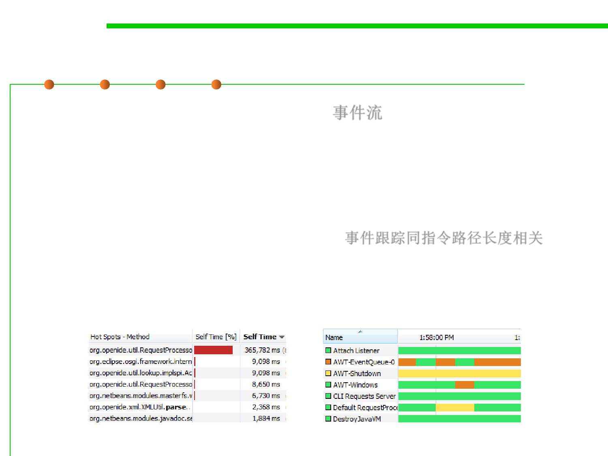

Outputs of Profiler
8.2 Dynamic Program Analysis Methods and Tools
▪ A stream of recorded events (a trace) 事件流
– For sequential programs, a summary profile is usually sufficient, but
performance problems in parallel programs (waiting for messages or
synchronization issues) often depend on the time relationship of events,
thus requiring a full trace to get an understanding of what is happening.
– The size of a (full) trace is linear to the program‘s instruction path
length, making it somewhat impractical. 事件跟踪同指令路径长度相关
– A trace may therefore be initiated at one point in a program and
terminated at another point to limit the output.